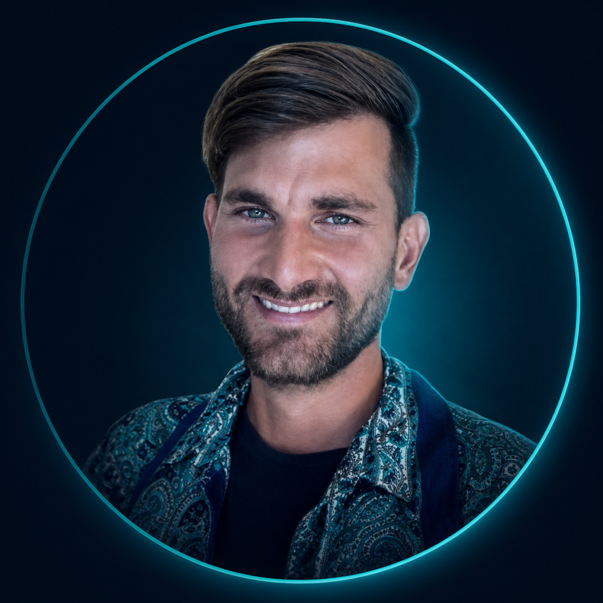

Profile
Systems & Software Engineer with expertise in safety-critical automotive systems, software quality, software development processes, and software project management. Broad experience across the full system and software lifecycle, from requirements management and system/software architecture to implementation, verification, release, and cross-functional coordination. Strong focus on the continuous improvement of development processes, especially through AI-supported methods and tools. Bringing this together with my safety-critical background, I explore how AI-generated software can be made dependable and largely error-free through verification, traceability and human-in-the-loop review, and where the boundaries of AI-supported development become critical.